Obras arquitectónicas
Edificaciones públicas y privadas: centros administrativos, conjuntos habitacionales, escuelas, centros de atención médica, estaciones de seguridad pública y parques industriales y comerciales.
Desde 1995
Arquitectura e ingeniería: obras civiles y arquitectónicas para el sector público y privado en el Valle del Cauca, Cauca y otras regiones de Colombia.
Nosotros
Angel Miranda & Cía Construcciones, con domicilio en Jamundí (Valle del Cauca), ha desarrollado obras del sector público y privado de carácter arquitectónico y civil, con énfasis en transporte, urbanismo, estructuras industriales (concreto y metálicas), obras hidráulicas, sanitarias, comerciales, hospitalarias, educativas, vivienda V.I.S., vivienda especial e institucional.
Contamos con profesionales de reconocida idoneidad y experiencia en la industria de la construcción. Nuestras actividades se realizan con programas técnicos especiales para diseño, presupuesto, programación, seguimiento y control de obras, y trabajamos en asocio con diferentes empresas para utilizar equipo de moderna tecnología.
Mantener, a través de la excelencia de las obras realizadas, una permanente posición de liderazgo en el campo de la construcción de proyectos arquitectónicos y civiles, con énfasis en diseño y urbanismo, alcanzando el máximo nivel de competitividad que garantice el crecimiento y desarrollo armónico, así como una mejor calidad de vida para socios, empleados, clientes, proveedores, comunidad y medio ambiente.
Tener en el 2035 una alta presencia local, regional y nacional, reconocida por la calidad de nuestras obras y servicios, como resultado de la integración productiva y armónica de los recursos humanos, tecnológicos, económicos y naturales.
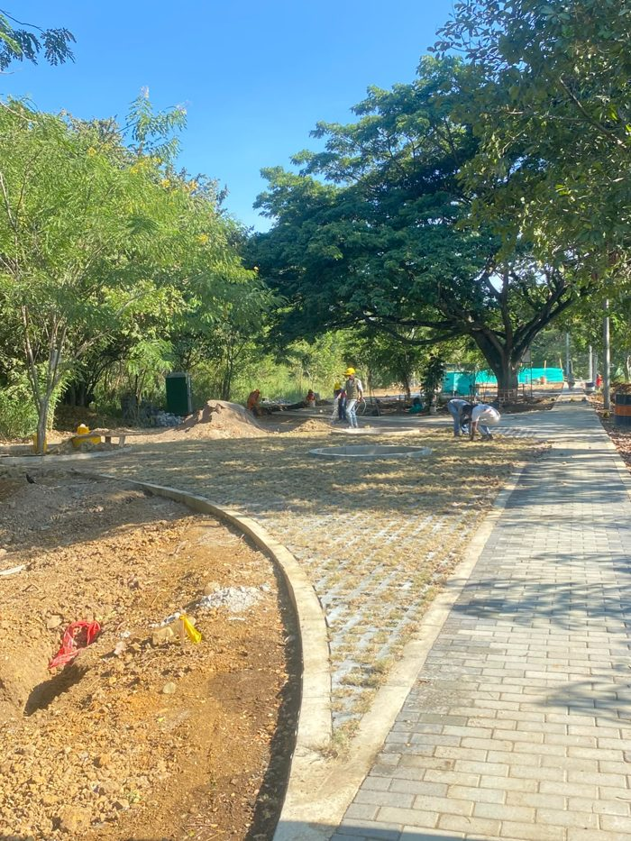
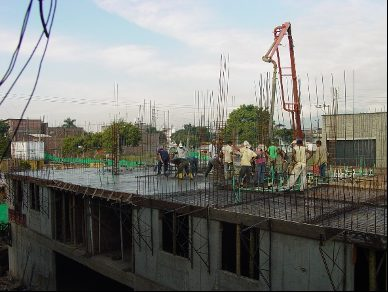
Servicios
Edificaciones públicas y privadas: centros administrativos, conjuntos habitacionales, escuelas, centros de atención médica, estaciones de seguridad pública y parques industriales y comerciales.
Estructuras en concreto, redes de acueducto y alcantarillado, canalización de redes de energía y telefonía, vías, movimiento de tierras, puentes, estructuras hidráulicas y metálicas.
Urbanismo para vivienda unifamiliar, multifamiliar y de interés social (V.I.S.), vivienda privada y de recreación.
Diseños arquitectónicos, estructurales, hidrosanitarios y eléctricos, estudios de preinversión, presupuestos, APU y programación de obra.
Planeación, promoción, desarrollo, seguimiento y control jurídico y financiero; promoción y venta de proyectos de vivienda y comercio.
Divisiones de asesoría, interventoría y avalúos como apoyo integral a cada proyecto.
Proyectos
67 apartamentos — Fondo Especial de Vivienda
90 apartamentos — Fondo Especial de Vivienda
Municipio de Puerto Tejada — Fonpacífico (barrios Betania, La Esperanza, Hipódromo, entre otros)
Construcción y adecuación de zonas verdes
Patio de camiones y tractomulas con polímeros Base Seal, y reparación de la vía principal de acceso
Obra civil de tres tramos, sector Anturios
Reforma y construcción de etapas del palacio municipal; diseño y construcción de la Casa de la Cultura
Área de urgencias y administrativa (diseño y construcción); reforma Hospital Cañaveralejo
Diseños de cinco coliseos deportivos, vías y alcantarillado
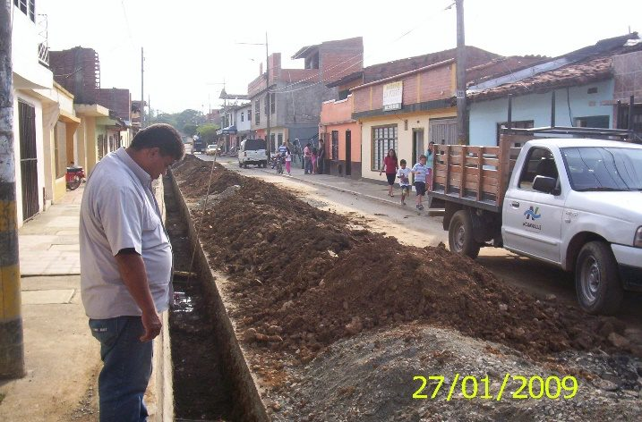
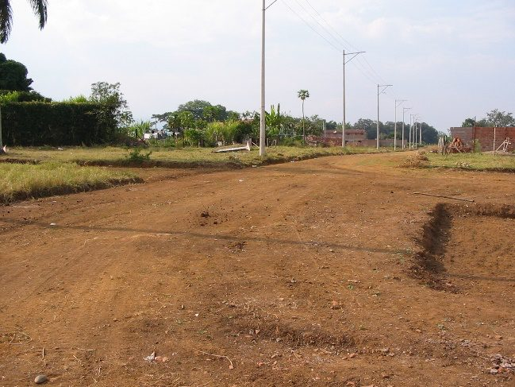
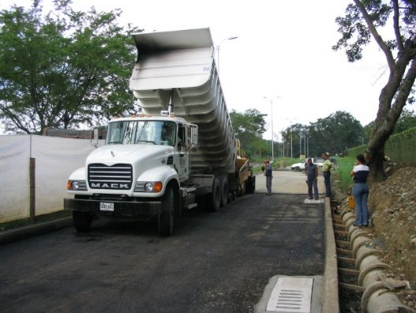
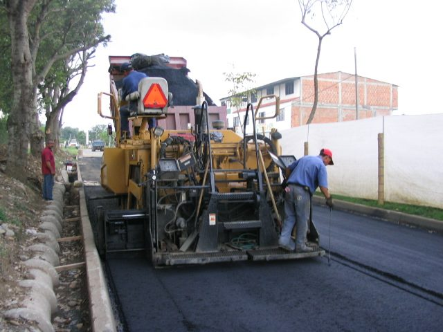
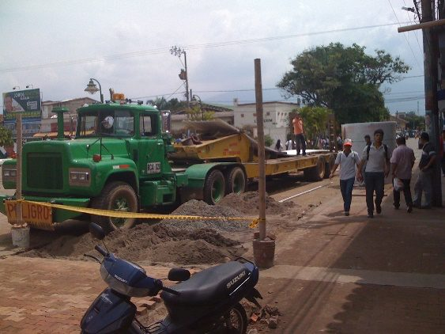
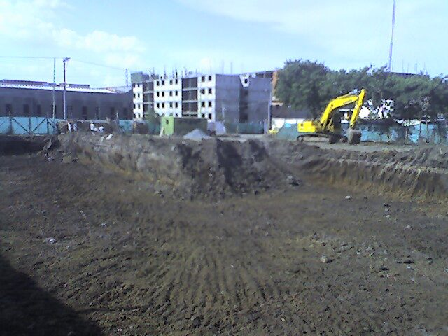
Por qué elegirnos
Colaboración, respaldo y sentido de pertenencia en todo nuestro equipo.
Cumplimiento en la entrega de obras en los tiempos precisados, brindando credibilidad y confianza.
Con nuestros clientes y al interior de la empresa, para el óptimo desarrollo de cada actividad.
Planta de asfalto, pavimentadora, retroexcavadoras, volquetas y equipos de laboratorio, entre otros.
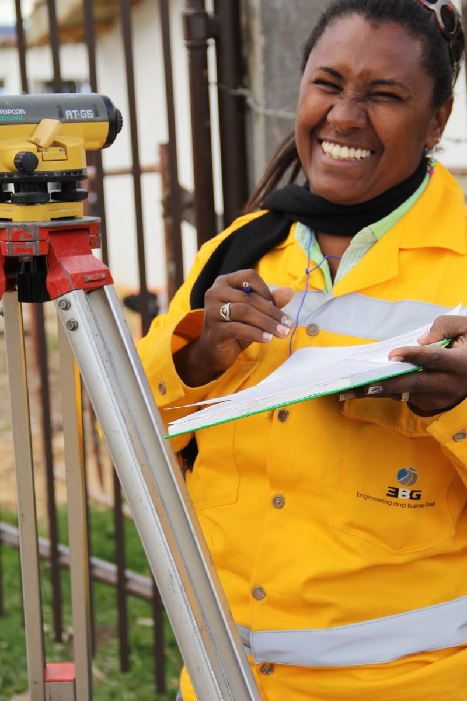
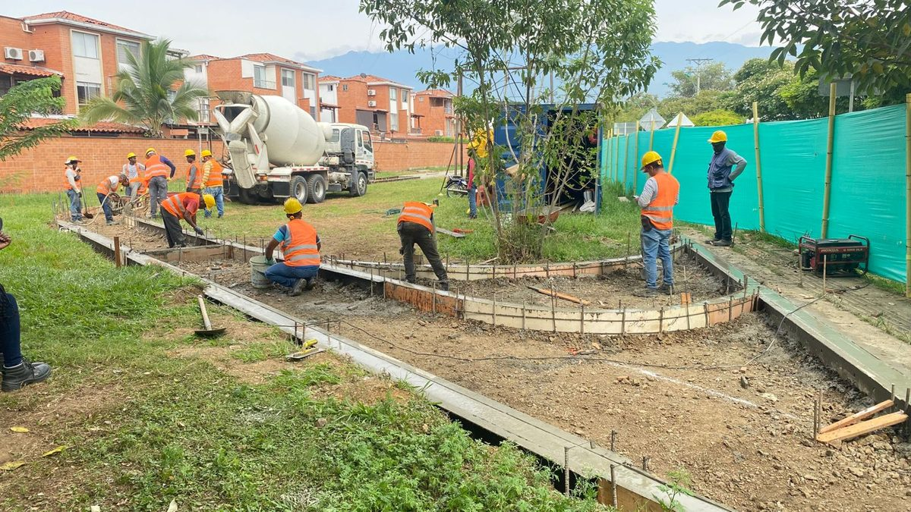
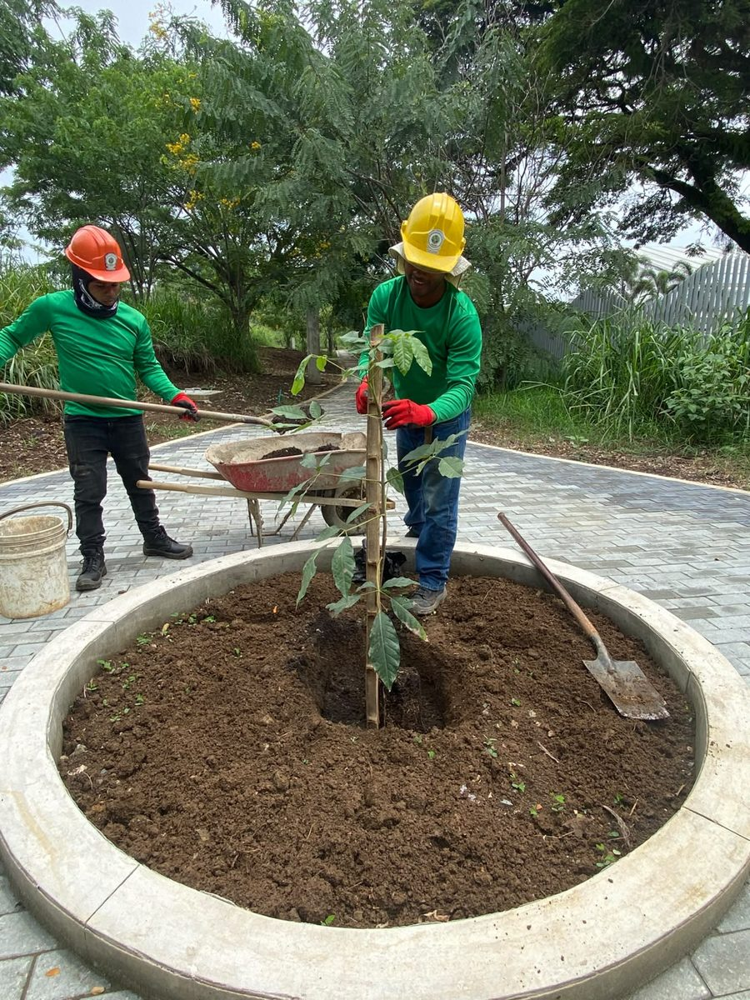
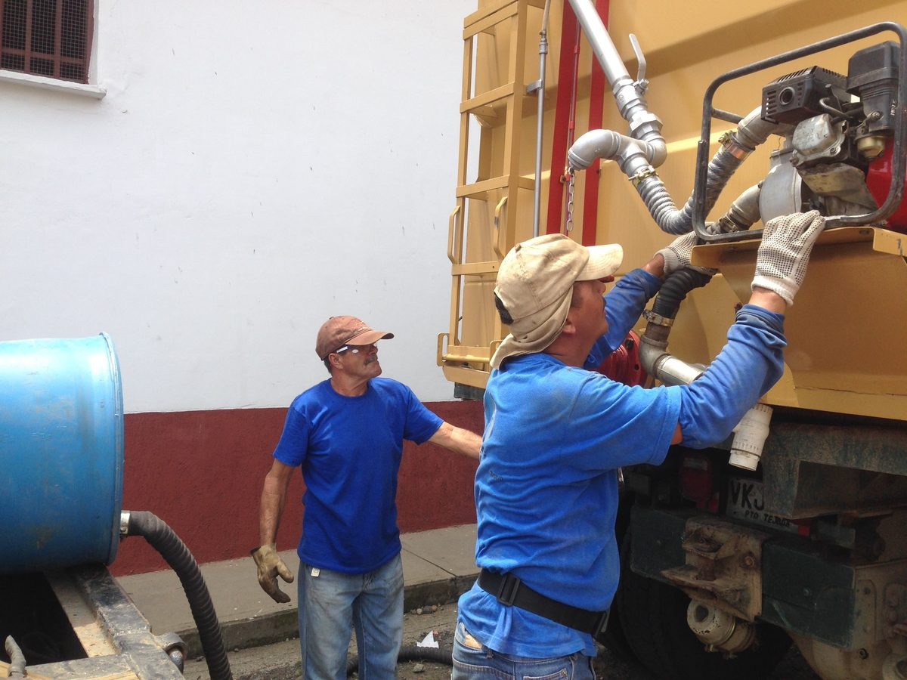
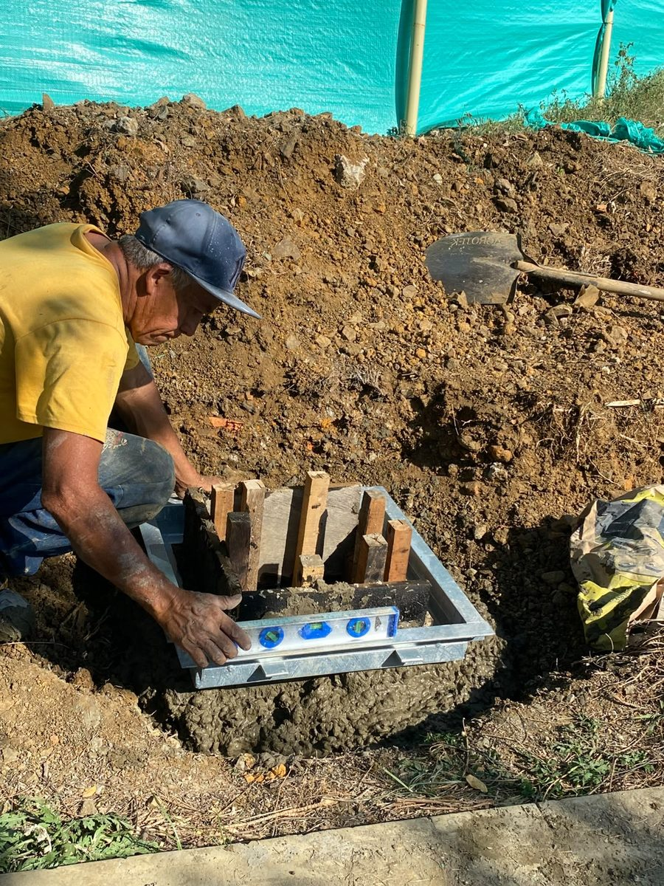
Confían en nosotros
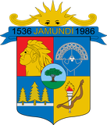
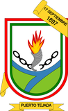
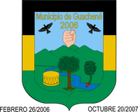
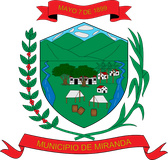
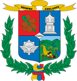
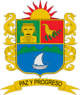
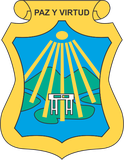
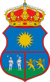
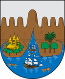
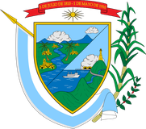
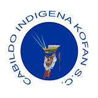
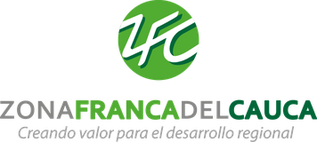
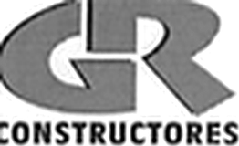
Contacto
Escríbanos o llámenos y con gusto le atenderemos.
Nuestras obras en video